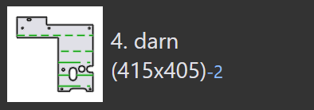
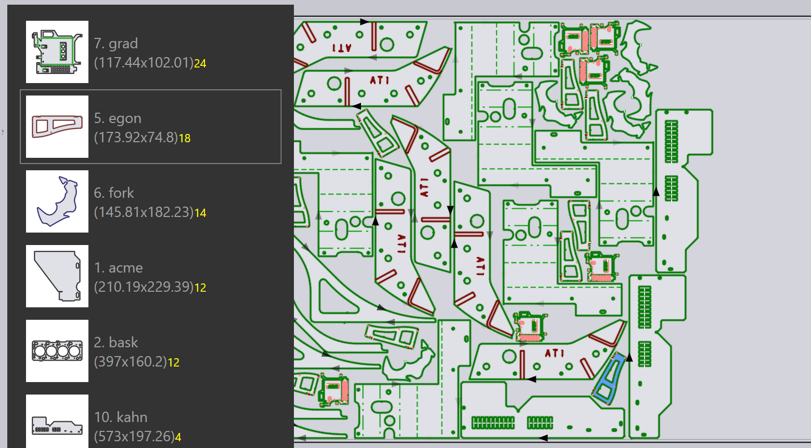

Modalità di nesting
Il motore di nesting in TecZone Laser può comporre layout da un job di nesting in modo efficiente. È anche possibile prendere uno qualsiasi dei layout annidati (o persino iniziare con una lamiera grezza) e aggiungere in maniera interattiva pezzi, spostarli e ruotarli.
Nesting automatico
Inizialmente, aggiungere lamiere o pezzi a un job di nesting. Quando poi si passa alla scheda Layouts, un nesting viene eseguito automaticamente. Successivamente, è possibile modificare l’elenco dei pezzi o modificare alcune impostazioni. Quindi abbiamo alcune opzioni per il rinesting dei pezzi con impostazioni diverse.
Aggiunta di più pezzi a una lamiera
Supponiamo di aver aggiunto alcuni pezzi aggiuntivi al job di nesting e che questi ultimi non sono ancora stati interessati dal nesting. Per utilizzare il motore di nesting per posizionare questi pezzi sulla lamiera, innanzitutto selezionare la scheda layout[1] che si desidera utilizzare (spesso è l’ultima lamiera, che rischia di essere riempita solo parzialmente). Quindi, fare clic sull’icona Nest dalla barra degli strumenti a sinistra, quindi selezionare Pack remaining sheet area automatically. [2]

I pezzi che rimangono da annidare vengono posizionati sulla restante area della lamiera. Questa opzione non altera nessuno dei pezzi già posizionati sulla lamiera e a volte viene utilizzata per annidare parzialmente a mano una lamiera e chiedere poi al motore di nesting per finire il resto del nesting. L’immagine seguente mostra i pezzi appena aggiunti in giallo; si può vedere che i pezzi più vecchi non sono stati postati:
Riordina - Foglio residuo
Se non è necessario mantenere le posizioni dei pezzi più vecchi, è possibile ottenere risultati migliori chiedendo al motore di nesting di riorganizzare l’intera lamiera. Scegliendo Rearrange to create a remainder sheet e TecZone Laser si annideranno tutti i pezzi sulla lamiera. Si cercherà di ottenere un foglio residuo rettangolare a destra, che può essere utilizzato come materiale grezzo per un nesting futuro.

Si può vedere che la lamiera sopra ha gli stessi pezzi di prima, ma è più affollata, consentendo il taglio del foglio residuo per l’uso.
Riordina - Uso dell’intera lamiera
Se il foglio residuo è troppo piccolo per essere usato, è utile chiedere al motore di nesting di riaffollare la lamiera in modo un po' meno pieno. Si hanno comunque tutti i pezzi sulla lamiera, ma si aumenta la spaziatura tra i pezzi per esaurire tutta l’area della lamiera. Ciò può essere fatto scegliendo Rearrange to use full sheet dal menu:

Nesting manuale
Aprire un layout per la modifica dalla scheda Layout del pannello Job o aprendo un file .fxlyt salvato in precedenza.
Aggiunta di pezzi
È possibile aggiungere pezzi al layout facendo clic sul pulsante Aggiungi sulla barra degli strumenti sinistra. Viene visualizzato un elenco di tutti i pezzi nel job di nesting:

Facendo clic su un pezzo dall’elenco consente di aggiungerlo alla lamiera (il motore di nesting è utilizzato per cercare di trovare una posizione ottimale per il pezzo, ma è possibile modificarla in un secondo momento). Le didascalie dei pezzi utilizzano vari colori per i diversi significati, come riportato di seguito:
|
12 pezzi annidati (quantità richiesta) |
 |
2 pezzi annidati in meno rispetto a quanto richiesto |
|
18 pezzi richiesti, 20 annidati (+2) |
|
Quantità richiesta di 24 pezzi annidati |


Spostando il mouse sui pezzi nel relativo elenco, TecZone Laser calcola immediatamente un buon punto di posizionamento del pezzo e prova a inserirlo nella lamiera in colore blu, in modo che sia possibile valutare se va bene o meno. È quindi possibile posizionare rapidamente un certo numero di pezzi sulla lamiera semplicemente spostando il mouse su di esse e facendo clic.

| Una volta posizionati i pezzi sulla lamiera, possono essere spostati, ruotati o ripetuti utilizzando il pannello Posizionamento. |